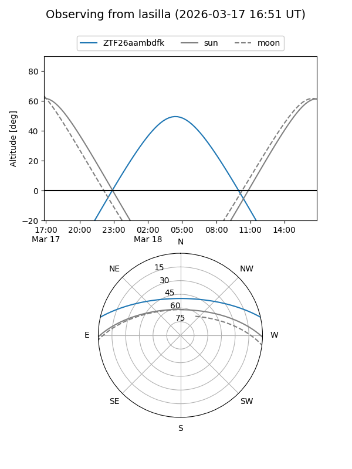
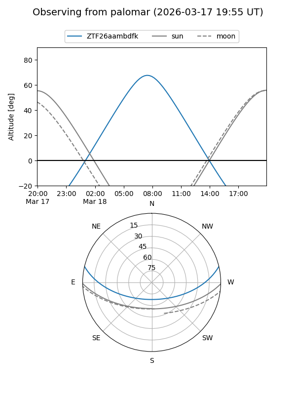

ZTF26aambdfk
Target ZTF26aambdfk at 2026-03-18 11:38
Aliases and brokers:
FINK: link
Lasair: link
ALeRCE: link
alt names
ZTF26aambdfk (ztf,fink_ztf)
Coordinates:
equatorial (ra, dec) = 170.8360,+11.28535
equatorial (HMS+DMS) = 11:23:20.64,+11:17:07.25
galactic (l, b) = (246.1026,+63.93906)
Flags:
Photometry:
last ztfg=17.78
1 ztfg detections
Lightcurve
Visibility


Additional plots